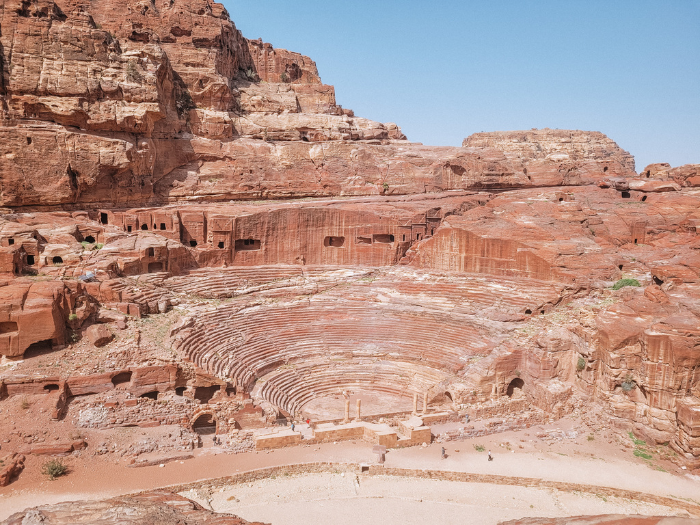
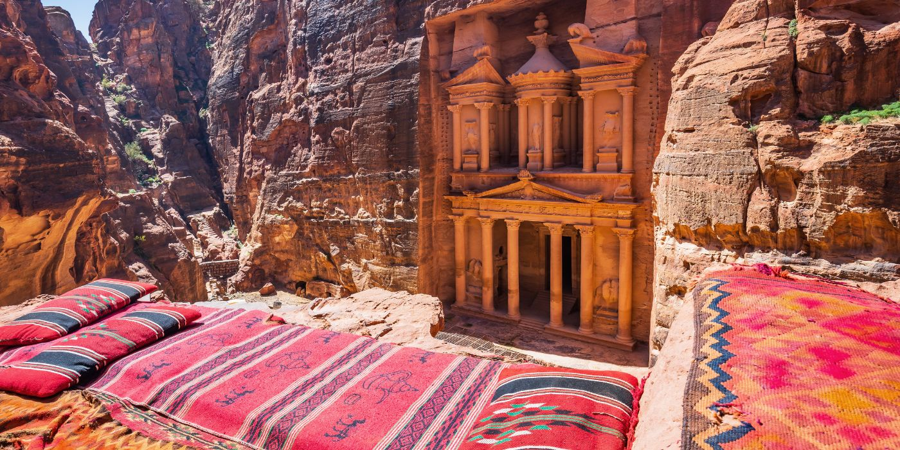
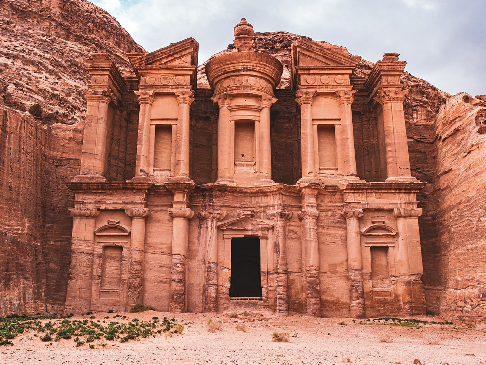
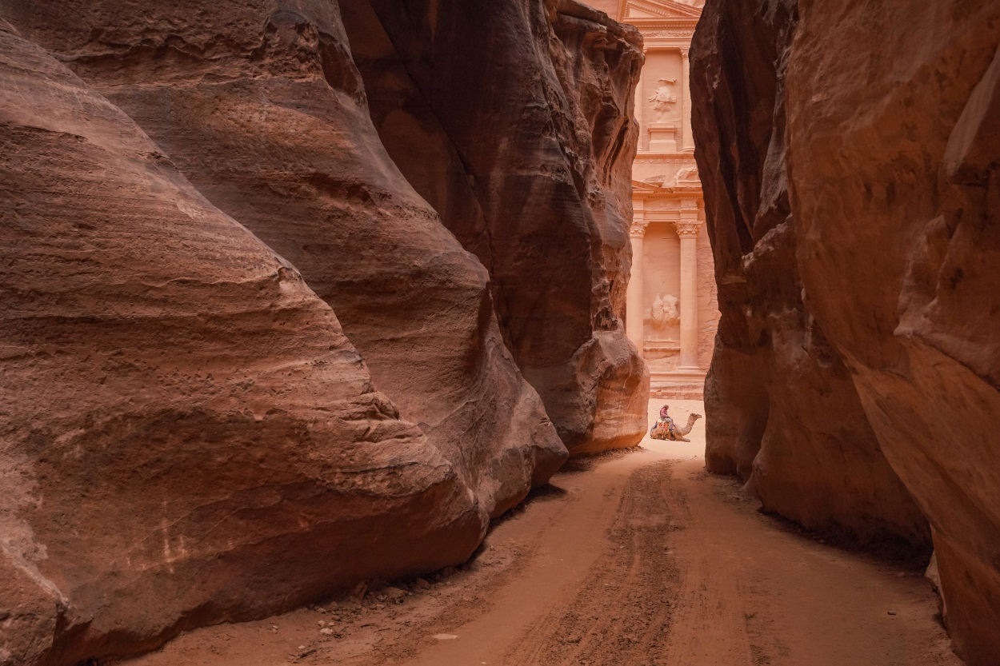
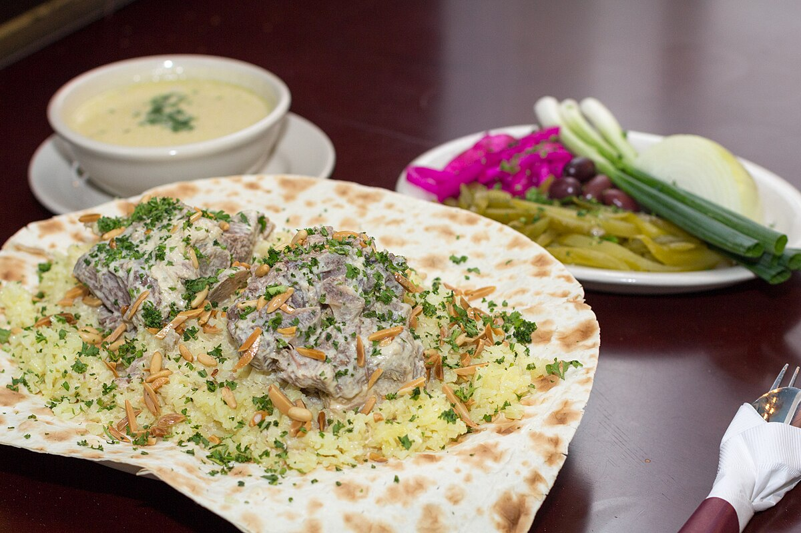
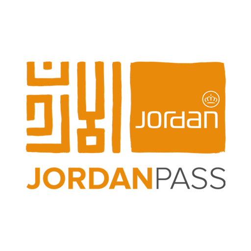

Immergiti nella leggenda di Petra, la "città rosa" scolpita nell'arenaria, un gioiello archeologico nel cuore della Giordania. Fondata dai Nabatei, un ingegnoso popolo nomade arabo, intorno al IV secolo a.C., Petra divenne una fiorente metropoli grazie alla sua posizione cruciale sulle antiche rotte carovaniere che trasportavano incenso, mirra e spezie preziose tra Arabia, Egitto e il Mediterraneo.
I Nabatei non erano solo mercanti astuti, ma anche maestri ingegneri. Conquistarono il deserto creando un complesso sistema idraulico di canali e cisterne, vitale per la sopravvivenza della città. La loro eredità più spettacolare è l'architettura rupestre: facciate monumentali, tombe elaborate e templi grandiosi furono intagliati direttamente nella roccia, creando capolavori come il famoso Tesoro (Al-Khazneh) e l'imponente Monastero (Ad-Deir), simboli eterni della loro abilità.
Dominio Romano e Declino

L'influenza romana arrivò nel 106 d.C. con l'annessione all'Impero Romano sotto Traiano. Questo periodo portò nuove costruzioni come strade colonnate e terme, integrando lo stile romano con quello nabateo. Tuttavia, il cambiamento delle rotte commerciali e violenti terremoti portarono a un lento declino. Petra svanì dalle mappe del mondo occidentale, custodita solo dalla memoria delle tribù beduine locali.
Fu solo nel 1812 che l'esploratore svizzero Johann Ludwig Burckhardt, travestito, svelò nuovamente Petra al mondo. Da allora, il suo fascino non ha smesso di attrarre viaggiatori, studiosi e sognatori. Riconosciuta come Patrimonio UNESCO e una delle Sette Meraviglie del Mondo Moderno, Petra oggi non è solo un sito archeologico, ma un'esperienza indimenticabile, un portale verso un passato scolpito nella pietra e nel tempo.
Petra: Le sue Gemme più preziose
Il Tesoro (Al-Khazneh)

Il Tesoro, conosciuto come Al-Khazneh, è senza dubbio l'emblema più celebre di Petra. Questa magnifica facciata alta quasi 40 metri scolpita interamente nella roccia rappresenta un capolavoro dell'ingegneria e dell'arte nabatea. Situata alla fine del Siq, la sua comparsa improvvisa lascia senza parole. Si ritiene che l'edificio sia stato originariamente un mausoleo reale, anche se molte leggende locali parlano di tesori nascosti in cima alla struttura. Le sue colonne corinzie, le sculture minuziose e la perfezione simmetrica testimoniano la grandezza della civiltà che l'ha realizzata.
Visitare il Tesoro nelle prime ore del mattino o nel tardo pomeriggio regala un'esperienza ancora più suggestiva, quando la luce solare accende le sfumature rosa e arancio dell’arenaria. È un luogo che incarna tutto il fascino e il mistero di Petra, una porta simbolica verso un mondo antico e affascinante che non smette mai di meravigliare.
Il Monastero (Ad-Deir)

Il Monastero, o Ad-Deir, è una delle strutture più maestose di Petra. Simile al Tesoro ma ancora più grande, la sua imponente facciata domina un altopiano raggiungibile solo dopo una lunga salita di oltre 800 gradini intagliati nella roccia. Originariamente probabilmente utilizzato come tempio o luogo di culto, durante l'epoca bizantina fu convertito in una chiesa, da cui deriva il nome moderno. La semplicità decorativa della sua facciata esterna contrasta con la sua imponenza e lo rende un monumento di spiritualità e potenza.
Arrivare ad Ad-Deir è un’impresa che viene ampiamente ricompensata. Oltre alla bellezza della struttura stessa, il luogo offre uno dei panorami più spettacolari dell’intera regione: da qui si domina l’intera valle di Petra e si può godere di un silenzio solenne, rotto solo dal vento. È uno di quei luoghi che invitano alla riflessione e al rispetto per la grandezza del passato.
Il Siq

Il Siq è molto più di un semplice ingresso: è una vera e propria introduzione scenografica all’universo di Petra. Questo stretto canyon naturale, lungo circa 1.2 km, si snoda tra pareti di roccia alte fino a 80 metri, creando un percorso suggerente e misterioso. Camminare lungo il Siq è come intraprendere un pellegrinaggio nel tempo: ogni curva svela nuove sfumature, giochi di luce e antichi resti nabatei come bassorilievi e canali scavati nella pietra per incanalare l’acqua.
Il momento più magico si verifica quando, alla fine del percorso, si intravede per la prima volta il Tesoro che appare incorniciato dalle pareti rocciose. Questo passaggio è considerato uno dei più emozionanti dell’intero viaggio a Petra. Il Siq non è solo un accesso, ma una componente essenziale dell’esperienza, capace di costruire tensione, meraviglia e una connessione profonda con l’ambiente naturale e spirituale della città antica.
Petra: Consigli e Segreti per un Viaggio Indimenticabile
Delizie Culinarie e Oasi di Relax

Esplorare Petra è un'avventura che richiede energia, e quale modo migliore per ricaricarsi se non immergendosi nei sapori autentici della Giordania? La vicina cittadina di Wadi Musa è il tuo punto di riferimento gastronomico. Lasciati tentare dal Mansaf, il piatto nazionale per eccellenza: un trionfo di agnello tenerissimo cotto in uno yogurt fermentato (jameed) e servito su un letto di riso aromatico, spesso guarnito con mandorle e pinoli tostati. È più di un pasto, è un rito sociale.
Per un'esperienza più informale, esplora i ristoranti locali che offrono una vasta gamma di mezze: hummus cremoso, moutabel affumicato (crema di melanzane), croccanti falafel, tabbouleh fresco e warak enab (involtini di foglie di vite). Accompagna il tutto con il pane arabo caldo (khubz). Se cerchi un'atmosfera familiare, "My Mom's Recipe Restaurant" è rinomato per le sue ricette tradizionali, mentre "Beit Al-Barakah" conquista con le sue proposte vegetariane creative. Dopo le tue scoperte archeologiche, trova rifugio in una delle tante terrazze panoramiche degli hotel o dei caffè di Wadi Musa. Sorseggiare un tè alla menta dolce e profumato mentre il sole tramonta dietro le montagne rosate di Petra è un momento di pura magia, un'oasi di tranquillità per riflettere sulle meraviglie viste durante il giorno.
Meraviglie Scolpite: Oltre il Tesoro e il Monastero
Petra è un museo a cielo aperto vasto e complesso, e mentre il Tesoro e il Monastero catturano l'immaginazione collettiva, innumerevoli altri monumenti attendono di essere scoperti. Percorrendo la Via delle Facciate, ti troverai circondato da tombe nabatee scavate nella roccia, ognuna con la sua storia silenziosa. Non limitarti a guardare dal basso: avventurati verso le Tombe Reali. La Tomba dell'Urna, così chiamata per l'urna scolpita sulla sua sommità, ti accoglierà con un'ampia terrazza e interni sorprendentemente spaziosi, usati in epoca bizantina come chiesa. Ammira le incredibili venature naturali dell'arenaria nella Tomba della Seta e lasciati stupire dalla grandiosità della Tomba Palazzo, che imita la facciata di un palazzo romano.
Scendi poi verso il cuore della città antica per scoprire il Teatro Romano, interamente scavato nella roccia dai Nabatei e successivamente ampliato dai Romani, capace di contenere circa 8500 spettatori. Immagina le rappresentazioni che un tempo animavano questa cavea spettacolare. Per i più avventurosi, la salita all'Altare del Sacrificio (Al-Madbah) è un must. Il sentiero è ripido ma ben segnalato, e una volta in cima, sarai ricompensato con una vista a 360 gradi che abbraccia l'intera vallata, inclusa una prospettiva unica sul Tesoro nascosto laggiù. Lungo la discesa (seguendo un percorso alternativo), scoprirai altre tombe meno conosciute e affascinanti, come la Tomba del Soldato Romano e il Triclinio del Giardino. Petra è un labirinto di storia, concediti il tempo di perderti tra le sue meraviglie.
Logistica Vincente: Biglietti, Pass e Spostamenti Intelligenti

Una pianificazione oculata è la chiave per massimizzare la tua esperienza a Petra. Il consiglio numero uno è acquistare il Jordan Pass online (www.jordanpass.jo) prima del tuo arrivo in Giordania. Questo pass turistico digitale non solo include il costo del visto d'ingresso nel paese (a condizione di rimanere almeno 3 notti), ma ti garantisce anche l'accesso a Petra per 1, 2 o 3 giorni consecutivi (a seconda del pacchetto scelto) e l'ingresso gratuito a oltre 40 siti turistici in tutta la Giordania. È un risparmio significativo di tempo e denaro. Scaricalo sul tuo telefono o stampalo per mostrarlo all'aeroporto e all'ingresso dei siti.
Una volta a Petra, preparati a esplorare a piedi. Il sito è enorme! Indossa scarpe da trekking comode e chiuse, vestiti a strati (le temperature possono variare), porta abbondante acqua, crema solare ad alta protezione, occhiali da sole e un cappello. Il percorso principale dal Visitor Centre attraverso il suggestivo Siq fino al Tesoro è di circa 1.2 km, prevalentemente pianeggiante. Da lì, le distanze aumentano: per raggiungere il Monastero, ad esempio, dovrai affrontare una salita di circa 800 gradini scavati nella roccia. Se la fatica si fa sentire o hai limitazioni fisiche, puoi usufruire dei servizi di trasporto locali a pagamento: carrozze trainate da cavalli percorrono il Siq, mentre asini e cammelli sono disponibili per le salite più impegnative. Ricorda di concordare sempre il prezzo prima di salire e sii un viaggiatore responsabile, valutando le condizioni degli animali.
Viaggiare Informati: Sicurezza e Consigli Utili
La Giordania è rinomata per la sua ospitalità e per essere una destinazione generalmente sicura per i viaggiatori internazionali. Le aree turistiche come Petra sono ben presidiate e le autorità locali sono molto attente alla sicurezza dei visitatori. Tuttavia, come per ogni viaggio, è fondamentale adottare un approccio informato e prudente. La situazione geopolitica nella regione mediorientale richiede di rimanere aggiornati sugli ultimi sviluppi.
Prima della partenza, consulta tassativamente il sito "Viaggiare Sicuri" curato dall'Unità di Crisi del Ministero degli Affari Esteri italiano (o il portale equivalente del tuo paese). Qui troverai le informazioni più recenti sulla sicurezza, eventuali avvisi specifici e consigli sanitari. È altamente raccomandato registrare il proprio viaggio sul sito "Dove Siamo nel Mondo" per essere rintracciabili in caso di emergenza. Durante il soggiorno, usa il buon senso: evita manifestazioni pubbliche, non fotografare installazioni militari o di polizia, rispetta le usanze locali (soprattutto nell'abbigliamento fuori dalle aree prettamente turistiche) e non avventurarti in zone remote o vicine ai confini senza una guida autorizzata. Affidati a guide ufficiali all'interno del sito di Petra per percorsi meno battuti. Seguendo queste semplici precauzioni, potrai goderti la maestosità di Petra in totale serenità.
 Esplora Petra interattivamente
Esplora Petra interattivamente